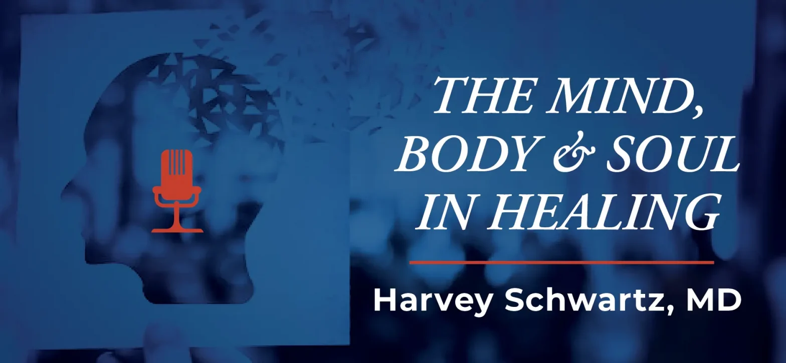

Dr. Harvey Schwartz | Mind, Body & Soul in Healing Podcast
Dr. Harvey Schwartz hosts "The Mind, Body & Soul in Healing" podcast, featuring conversations with psychoanalysts working in various community settings. The podcast explores how psychoanalytic thinking extends into dialysis units, prenatal clinics, corporate board rooms, community centers, and humanitarian organizations. Episodes include lectures, book discussions, and insights from experienced clinicians.
View